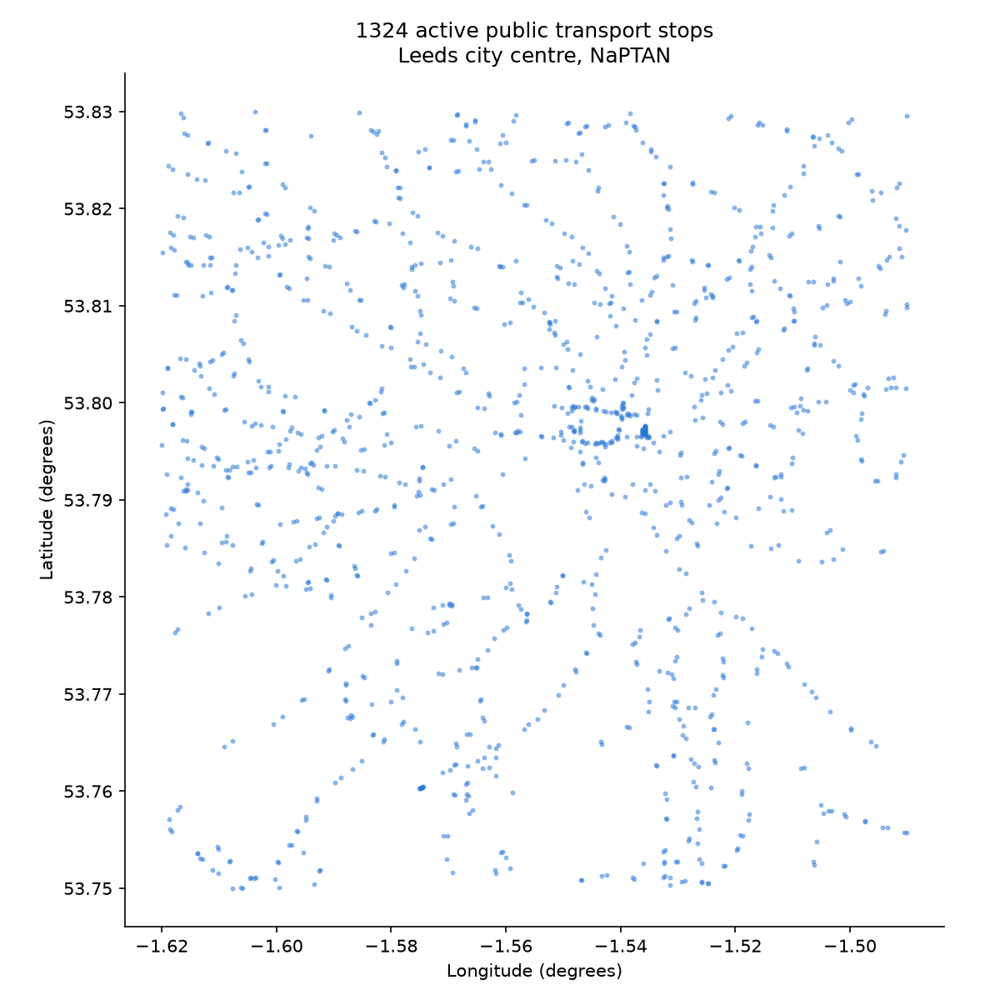
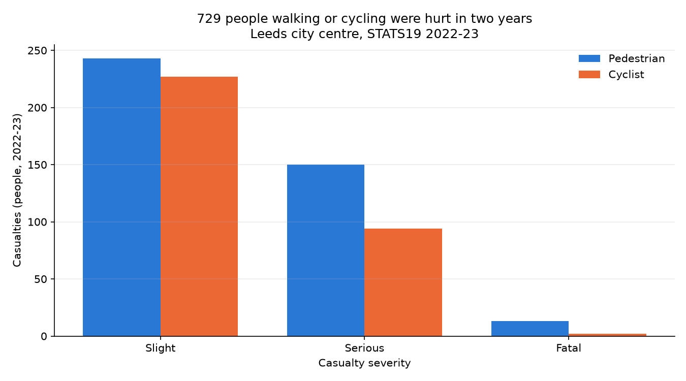
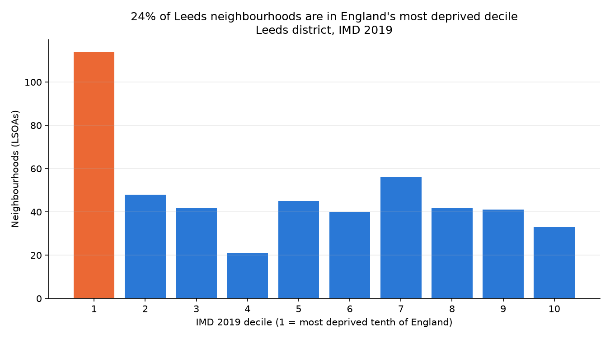
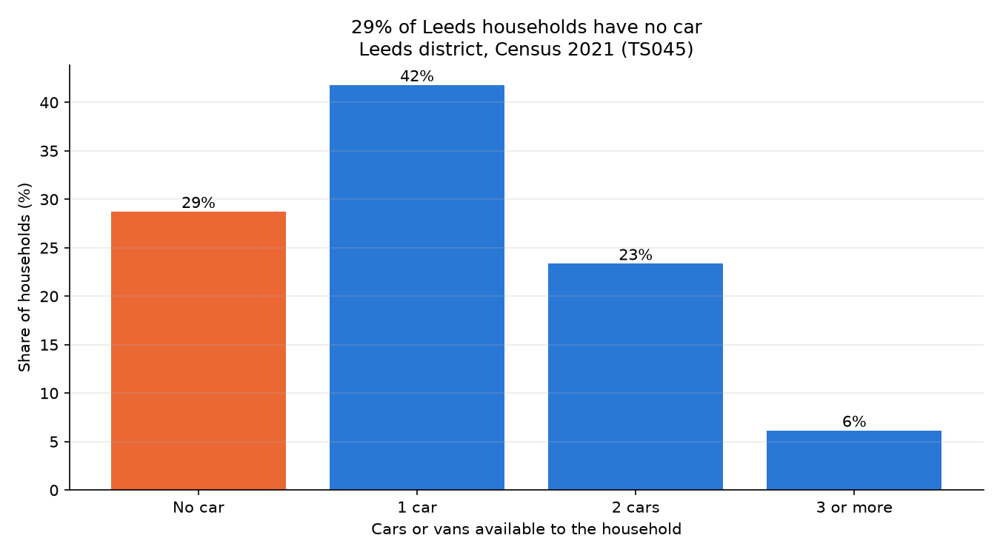
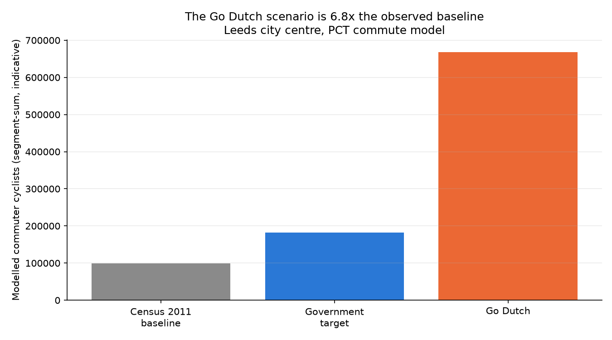
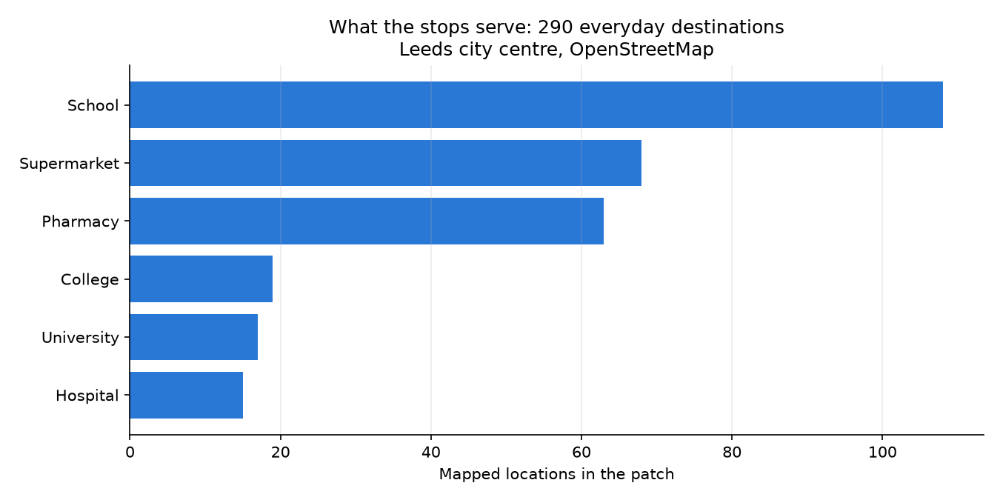
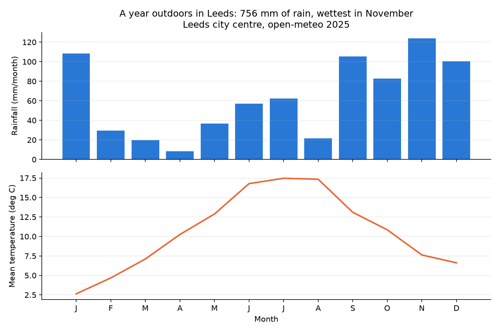

The patch contains 1324 active public transport stops. The densest locality is Leeds City Centre, with 149 stops - the city-centre interchange effect is visible before any service data is added. Stop positions alone already sketch the road network.

STATS19 records 729 pedestrian and cyclist casualties in the patch across 2022-23, of whom 244 were seriously hurt and 15 killed. Pedestrians account for 406 of the 729. Every one of these points has a location, so the natural next question - where, exactly - is answerable with the distance technique from the studio.

Across the Leeds district's 482 neighbourhoods, 114 (24%) fall in England's most deprived decile, against 33 in the least deprived - the city holds both extremes at once. This chapter is drawn at district level; cutting it to the patch needs the ONS point-in-LSOA lookup, which is a worthwhile refinement for a student atlas. Note the codes: IMD 2019 uses 2011 LSOA boundaries.

Of the district's 341,490 households, 98,087 (29%) have no car or van - for them, walking, cycling, and public transport are the whole transport system. The neighbourhood where car-free households are most common is Leeds 111B, at 82%. Census codes here are 2021 LSOAs; joining them to the 2019 deprivation file is the vintage trap from the catalogue.

Across the 3552 network segments touching the patch, the PCT's Go Dutch scenario models roughly 6.8 times the cycling of its 2011 observed baseline. Two honesty notes belong in any use of this chart: the sums count each cyclist on every segment they cross, so the scale is indicative rather than a count of people; and the model covers 2011 commuting only - no leisure, shopping, or study trips, and a baseline now well over a decade old.

OpenStreetMap places 290 everyday destinations in the patch across six categories, including 108 schools, 63 pharmacies, and 68 supermarkets. These are the places transport exists to reach, which makes this layer the natural companion to chapter 1: a stop matters in proportion to what is near it. Coverage is community-mapped, so treat absence as unmapped, never as proven absent.

In 2025 the patch received 756 mm of rain, and rain heavier than drizzle fell in 665 hours - 8% of the year. Monthly mean temperatures ran from 2.6 to 17.5 deg C. For anyone walking, cycling, or waiting at one of chapter 1's stops, this is the operating environment; joining it to demand or reliability data is a natural stretch chapter.